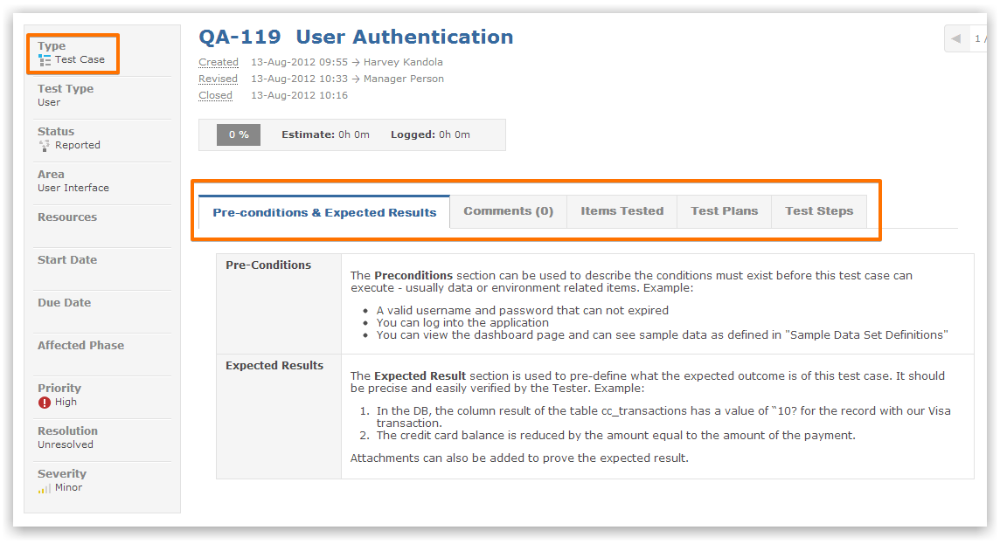
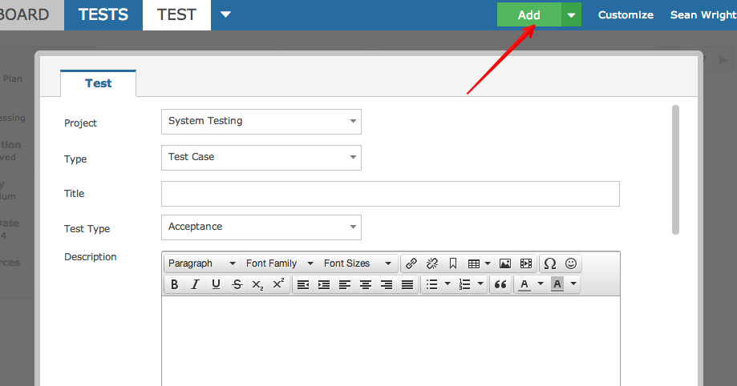
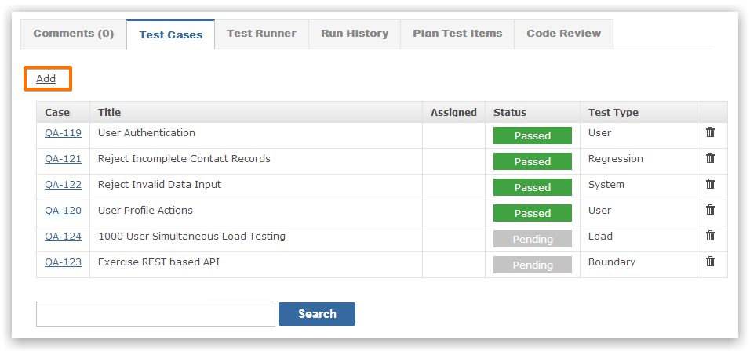
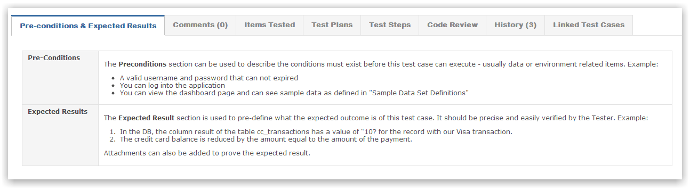
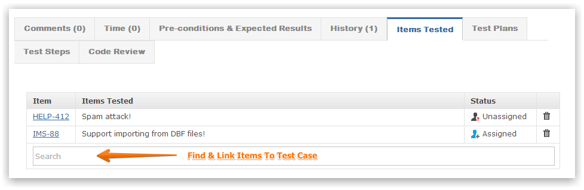
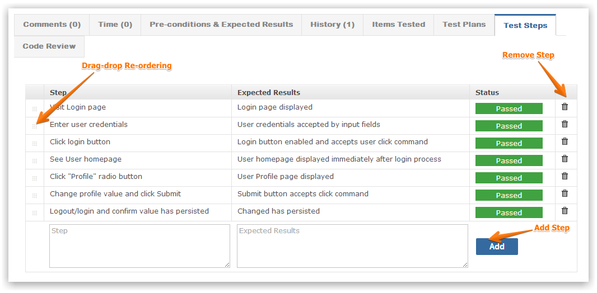

A test case consists of the following sections.

Test cases can be created by clicking the plus button.

You can also create test cases from within a test plan.

A test case can be assigned pre-conditions that tell the tester what pre-requisites should be in place before testing can commence.
Expected results are also required in order to compare the actual results with what you expected. If the results match then the test can be marked as passed.

Both fields can contain rich text formatting and the contents can be specified during test case creation or editing.
You can find and asssociate any item with the test case. This brings traceability for co-workers who can see which of their items are covered by test cases.

Since a test case is designed to belong to test plans, all such associations are shown.
NoteA test case can belong to multiple test plans - it's re-usable
The test steps provide a sequence of activities that must be executed in the defined order. The outcome of the activities is the actual result (which is then compared to the expected result).

Drag-drop to re-sequence the steps and click to edit existing steps.
NoteA test case cannot run if it has no steps